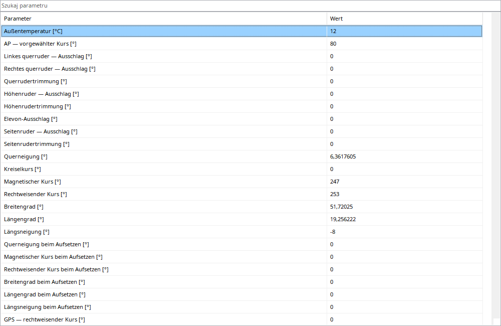

Werte untersucht einen Aufnahmezeitpunkt. Suche filtert Beschreibungen und Rohkennungen, etwa Öl oder eng_oil_pressure. Leeren stellt die Liste wieder her und ändert weder Daten noch Abonnements.
Einheiten folgen den Einstellungen. Bekannte Enums verwenden unübersetzte Cockpitbezeichnungen wie UP/1/2/5 oder RTO/DISARMED/MAX. Zuordnung hängt vom Flugzeug ab. Unbekannte Codes bleiben Zahlen, fehlende Werte keine Null. Der gemeinsame Zeitzeiger aktualisiert die Ansicht.
